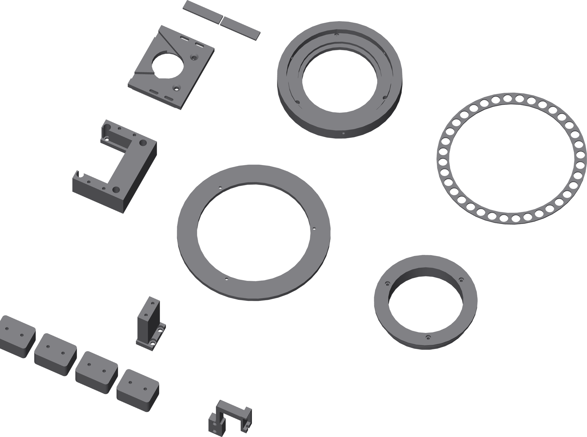

Print the rest
Eleven more shapes, each lying on the face it prints on. That face is the setting; the rest is ordinary.

| Part | On the bed | Setting |
|---|---|---|
| base-foot × 4 | Broad face | 5 walls, 40% gyroid. Keep both screw bores clear. |
| spool | Flange | Hub upward, 5 walls, 30% gyroid. |
| motor-tower | On its feet | Rails upward. The four M5 access holes print as vertical bores. |
| motor-carriage | Broad arm underside | Skin and clamp walls up. Build-plate-only tree support under the two belt-clearance roofs. |
| motor-clamp-pad × 2 | Either 48 × 12 mm face | Keep the screw-tip sockets clean. |
| ground-tower | Its foot | Ordinary. |
| ground-arm | Flat | Leaf and shoe fork in the bed plane. 100% infill. Reject any layer separation. |
| tube-nest | Its register face | 0.20 mm layer, 6 walls, 100% infill. Keep the three radial passages clear. |
| ball-cage | Flat | Ordinary. |
The carriage's two roofs
Supporting them keeps the Ø38.6 mm pilot ring continuous, and that ring — not the mounting screws — carries belt tension.